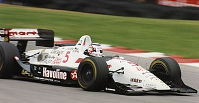

Home
Formula One Career
Champ Car Career
Champ Car Career

31 races over 2 years
Best finish 1st (1993)
First race 1993 FAI IndyCar GrandPrix
Last race 1994 Monterey Grand Prix
First win 1993FAI Indycar Grand
Last win 1993 Bosch Spark Plug Grand Prix
Wins 5
Podiums 13
Poles 10